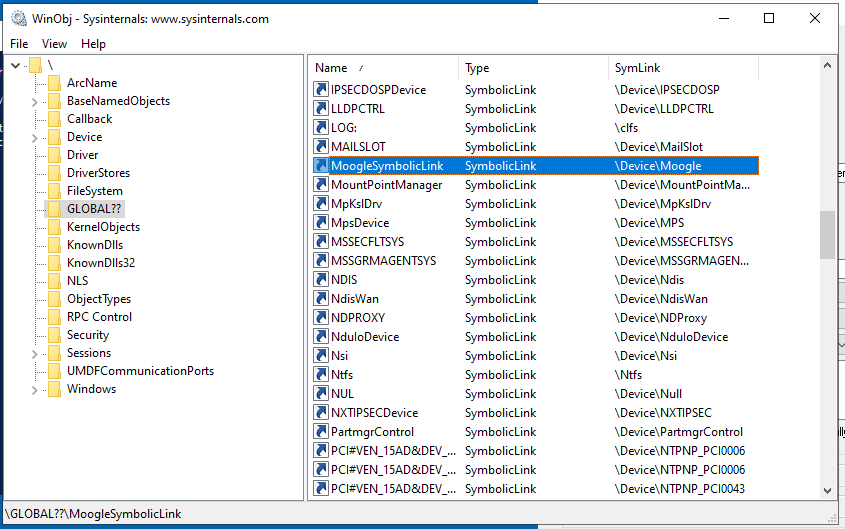
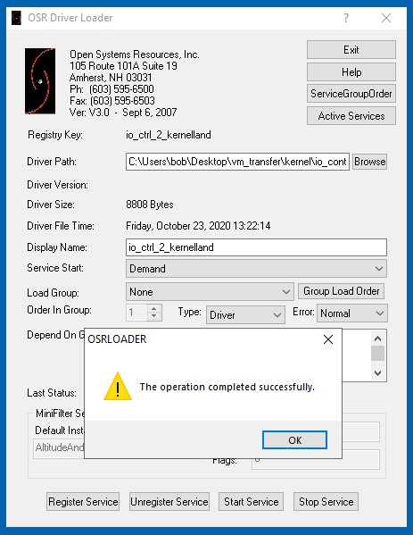
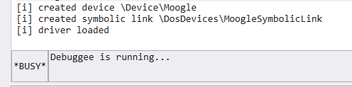
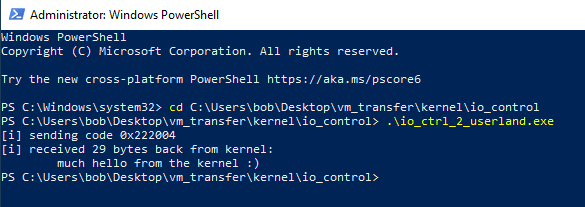
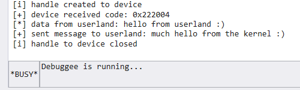

# IRP and IOCTRL Codes
•
https://ericasselin.com/userlandkernel-communication-deviceiocontrol-method•
https://www.drdobbs.com/windows/sending-ioctls-to-windows-nt-drivers/184416453•
https://cylus.org/windows-drivers-part-2-ioctls-c678526f90ae•
https://www.ired.team/miscellaneous-reversing-forensics/windows-kernel-internals/sending-commands-from-userland-to-your-kernel-driver-using-ioctlThis is the default/standard kerneland userland communication method described by MSDN.
Communication between kernel drivers and userland applications use a system called
IRP -
I/O Request PacketsKernel drivers define a set of I/O Control Codes.
Userland applications can request the kernel driver to do something by sending it one of those control codes.
For example:
I've set some custom I/O control codes in my kernel driver:
•
0x801 means open a file
•
0x802 means add some numbers together
•
0x803 means modify the network adapter for me
My userland application opens a handle to my driver with
CreateFile,
and submits the control code
0x802 to the kernel driver using the
DeviceIoControl function.
My kernel driver checks what control code it has been sent,
and executes the code/functions corresponding to control code
0x802 (add some numbers together)
My kernel driver then reports back whether it succeeded,
provides any extra information,
and completes the request - at which point my userland application receives the result.
That's it.
I encourage you to read MSDN for a little more info:
• IRP -
https://docs.microsoft.com/en-us/windows-hardware/drivers/gettingstarted/i-o-request-packets• Defining I/O control codes -
https://docs.microsoft.com/en-us/windows-hardware/drivers/kernel/defining-i-o-control-codes## How-to: Kernel Land
First we must declare a name for our driver,
otherwise we wouldn't be able to get a handle to it from userland.
#include <ntddk.h>
#include <wdf.h>
UNICODE_STRING DEVICE_NAME = RTL_CONSTANT_STRING(L"\\Device\\Moogle");
UNICODE_STRING DEVICE_SYMBOLIC_LINK = RTL_CONSTANT_STRING(L"\\DosDevices\\MoogleSymbolicLink");
You can find your device in WinObj when your driver has been loaded.
Next we define a set of I/O Control Codes.
Values less than
0x800 are reserved for Microsoft. Values higher than
0x800 are for use by vendors.
For an explanation of the other parameters, refer here:
•
https://docs.microsoft.com/en-us/windows-hardware/drivers/kernel/defining-i-o-control-codes// I/O control codes
#define IO_CODE_SENDMESSAGE CTL_CODE(FILE_DEVICE_UNKNOWN, 0x801, METHOD_BUFFERED, FILE_ANY_ACCESS)
Next we create functions that run when a handle is opened to our driver, and when a handle is closed.
At the moment they does nothing, but it's good practice to have them.
/*
When a handle to the driver is created.
*/
NTSTATUS MJ_Create(PDEVICE_OBJECT DeviceObject, PIRP Irp)
{
UNREFERENCED_PARAMETER(DeviceObject);
NTSTATUS nt_status = STATUS_SUCCESS;
//PIO_STACK_LOCATION stack_location = IoGetCurrentIrpStackLocation(Irp);
DbgPrint("[i] handle created to device \n");
Irp->IoStatus.Status = STATUS_SUCCESS;
Irp->IoStatus.Information = 0;
IoCompleteRequest(Irp, IO_NO_INCREMENT);
return nt_status;
}
/*
When a handle to the driver is closed.
*/
NTSTATUS MJ_Close(PDEVICE_OBJECT DeviceObject, PIRP Irp)
{
UNREFERENCED_PARAMETER(DeviceObject);
NTSTATUS nt_status = STATUS_SUCCESS;
//PIO_STACK_LOCATION stack_location = IoGetCurrentIrpStackLocation(Irp);
DbgPrint("[i] handle to device closed \n");
Irp->IoStatus.Status = STATUS_SUCCESS;
Irp->IoStatus.Information = 0;
IoCompleteRequest(Irp, IO_NO_INCREMENT);
return nt_status;
}
After that we create our function to handle I/O Control Codes.
It's simply an
if statement that handles our Control Code and executes code.
NTSTATUS IoControl(PDEVICE_OBJECT DeviceObject, PIRP Irp)
{
UNREFERENCED_PARAMETER(DeviceObject);
NTSTATUS nt_status = STATUS_SUCCESS;
PIO_STACK_LOCATION stack_location = IoGetCurrentIrpStackLocation(Irp);
char* message_from_kernel = "much hello from the kernel :)";
// grab control code
ULONG io_control_code = stack_location->Parameters.DeviceIoControl.IoControlCode;
if (io_control_code == IO_CODE_SENDMESSAGE)
{
DbgPrint("[+] device received code: 0x%x \n", io_control_code);
DbgPrint("[*] data from userland: %s \n", (char*)Irp->AssociatedIrp.SystemBuffer);
RtlCopyMemory(Irp->AssociatedIrp.SystemBuffer, message_from_kernel, strlen(Irp->AssociatedIrp.SystemBuffer));
DbgPrint("[+] sent message to userland: %s \n", message_from_kernel);
}
Irp->IoStatus.Status = STATUS_SUCCESS;
Irp->IoStatus.Information = strlen(message_from_kernel);
IoCompleteRequest(Irp, IO_NO_INCREMENT);
return nt_status;
}
Now we create
DriverEntry.
In
DriverEntry you create the I/O Device and its Symbolic Link,
as well as point our driver to all of our custom functions for handle creation, handle closure, etc.
NTSTATUS DriverEntry(PDRIVER_OBJECT DriverObject, PUNICODE_STRING RegistryPath)
{
UNREFERENCED_PARAMETER(RegistryPath);
NTSTATUS nt_status = STATUS_SUCCESS;
// create IO device and symbolic link
nt_status = IoCreateDevice(DriverObject, 0, &DEVICE_NAME, FILE_DEVICE_UNKNOWN, FILE_DEVICE_SECURE_OPEN, FALSE, &DriverObject->DeviceObject);
DbgPrint("[i] created device %wZ \n", DEVICE_NAME);
nt_status = IoCreateSymbolicLink(&DEVICE_SYMBOLIC_LINK, &DEVICE_NAME);
DbgPrint("[i] created symbolic link %wZ \n", DEVICE_SYMBOLIC_LINK);
// callback functions
DriverObject->DriverUnload = DriverUnload;
DriverObject->MajorFunction[IRP_MJ_CREATE] = MJ_Create; // function to run when handle to our device's symbol is opened
DriverObject->MajorFunction[IRP_MJ_CLOSE] = MJ_Close; // function to run when handle to our device's symbol is closed
DriverObject->MajorFunction[IRP_MJ_DEVICE_CONTROL] = IoControl; // function to handle IO requests from userland
DbgPrint("[i] driver loaded \n");
return nt_status;
}
Lastly we write our DriverUnload function, which simply deletes the device and it's symbolic link.
void DriverUnload(PDRIVER_OBJECT DriverObject)
{
// delete device and symbolic link
IoDeleteSymbolicLink(&DEVICE_SYMBOLIC_LINK);
IoDeleteDevice(DriverObject->DeviceObject);
DbgPrint("[i] driver unloaded \n");
return;
}
### Example Kernel Land Code
#include <ntddk.h>
#include <wdf.h>
UNICODE_STRING DEVICE_NAME = RTL_CONSTANT_STRING(L"\\Device\\Moogle");
UNICODE_STRING DEVICE_SYMBOLIC_LINK = RTL_CONSTANT_STRING(L"\\DosDevices\\MoogleSymbolicLink");
// I/O control codes
#define IO_CODE_SENDMESSAGE CTL_CODE(FILE_DEVICE_UNKNOWN, 0x801, METHOD_BUFFERED, FILE_ANY_ACCESS)
/*
When a handle to the driver is created.
*/
NTSTATUS MJ_Create(PDEVICE_OBJECT DeviceObject, PIRP Irp)
{
UNREFERENCED_PARAMETER(DeviceObject);
NTSTATUS nt_status = STATUS_SUCCESS;
//PIO_STACK_LOCATION stack_location = IoGetCurrentIrpStackLocation(Irp);
DbgPrint("[i] handle created to device \n");
Irp->IoStatus.Status = STATUS_SUCCESS;
Irp->IoStatus.Information = 0;
IoCompleteRequest(Irp, IO_NO_INCREMENT);
return nt_status;
}
/*
When a handle to the driver is closed.
*/
NTSTATUS MJ_Close(PDEVICE_OBJECT DeviceObject, PIRP Irp)
{
UNREFERENCED_PARAMETER(DeviceObject);
NTSTATUS nt_status = STATUS_SUCCESS;
//PIO_STACK_LOCATION stack_location = IoGetCurrentIrpStackLocation(Irp);
DbgPrint("[i] handle to device closed \n");
Irp->IoStatus.Status = STATUS_SUCCESS;
Irp->IoStatus.Information = 0;
IoCompleteRequest(Irp, IO_NO_INCREMENT);
return nt_status;
}
NTSTATUS IoControl(PDEVICE_OBJECT DeviceObject, PIRP Irp)
{
UNREFERENCED_PARAMETER(DeviceObject);
NTSTATUS nt_status = STATUS_SUCCESS;
PIO_STACK_LOCATION stack_location = IoGetCurrentIrpStackLocation(Irp);
char* message_from_kernel = "much hello from the kernel :)";
// grab control code
ULONG io_control_code = stack_location->Parameters.DeviceIoControl.IoControlCode;
if (io_control_code == IO_CODE_SENDMESSAGE)
{
DbgPrint("[+] device received code: 0x%x \n", io_control_code);
DbgPrint("[*] data from userland: %s \n", (char*)Irp->AssociatedIrp.SystemBuffer);
RtlCopyMemory(Irp->AssociatedIrp.SystemBuffer, message_from_kernel, strlen(message_from_kernel));
DbgPrint("[+] sent message to userland: %s \n", message_from_kernel);
}
Irp->IoStatus.Status = STATUS_SUCCESS;
Irp->IoStatus.Information = strlen(message_from_kernel);
IoCompleteRequest(Irp, IO_NO_INCREMENT);
return nt_status;
}
void DriverUnload(PDRIVER_OBJECT DriverObject)
{
// delete device and symbolic link
IoDeleteSymbolicLink(&DEVICE_SYMBOLIC_LINK);
IoDeleteDevice(DriverObject->DeviceObject);
DbgPrint("[i] driver unloaded \n");
return;
}
NTSTATUS DriverEntry(PDRIVER_OBJECT DriverObject, PUNICODE_STRING RegistryPath)
{
UNREFERENCED_PARAMETER(RegistryPath);
NTSTATUS nt_status = STATUS_SUCCESS;
// create IO device and symbolic link
nt_status = IoCreateDevice(DriverObject, 0, &DEVICE_NAME, FILE_DEVICE_UNKNOWN, FILE_DEVICE_SECURE_OPEN, FALSE, &DriverObject->DeviceObject);
DbgPrint("[i] created device %wZ \n", DEVICE_NAME);
nt_status = IoCreateSymbolicLink(&DEVICE_SYMBOLIC_LINK, &DEVICE_NAME);
DbgPrint("[i] created symbolic link %wZ \n", DEVICE_SYMBOLIC_LINK);
// callback functions
DriverObject->DriverUnload = DriverUnload;
DriverObject->MajorFunction[IRP_MJ_CREATE] = MJ_Create; // function to run when handle to our device's symbol is opened
DriverObject->MajorFunction[IRP_MJ_CLOSE] = MJ_Close; // function to run when handle to our device's symbol is closed
DriverObject->MajorFunction[IRP_MJ_DEVICE_CONTROL] = IoControl; // function to handle IO requests from userland
DbgPrint("[i] driver loaded \n");
return nt_status;
}
## How-to: Userland
The userland code is fairly well commented, so it shouldn't need an explanation.
It simply sends a message -
"hello from userland :)" - and receives a message back from the kernel.
It opens a handle to the kernel driver with
CreateFile,
and sends a control code with
DeviceIoControl.
### Example Userland Code
#include <stdio.h>
#include <Windows.h>
#define IO_CODE_SENDMESSAGE CTL_CODE(FILE_DEVICE_UNKNOWN, 0x801, METHOD_BUFFERED, FILE_ANY_ACCESS)
int main()
{
HANDLE h_device;
BOOL b_ret = FALSE;
wchar_t target_device[] = L"\\\\.\\MoogleSymbolicLink";
char in_message[] = "hello from userland :)";
char out_message[128] = { 0 };
DWORD bytes_returned = 0;
// open handle to driver
h_device = CreateFileW(target_device, GENERIC_ALL, 0, 0, OPEN_EXISTING, FILE_ATTRIBUTE_SYSTEM, 0);
if (h_device == INVALID_HANDLE_VALUE)
{
printf("[-] failed to open device %ws: %d \n", target_device, GetLastError());
return EXIT_FAILURE;
}
// send I/O control code & receive data back
printf("[i] sending code 0x%x \n", IO_CODE_SENDMESSAGE);
b_ret = DeviceIoControl(h_device, IO_CODE_SENDMESSAGE, in_message, strlen(in_message), out_message, sizeof(out_message), &bytes_returned, NULL);
printf("[i] received %d bytes back from kernel: \n\t%s \n", bytes_returned, out_message);
CloseHandle(h_device);
return 0;
}
## Demo
A debuggee machine is running our kernel driver.
A debugger machine is running WinDbg and is connected to the debuggee machine.
I'm loading the driver with OSR Driver Loader.
On the debuggee machine I
Register Service and
Start Service.
Our kernel driver to hide processes is now running.
Back on WinDbg I can see that our device has been created.
And back on the debuggee machine where our driver is loaded, we can see our driver in
WinObjIn an Administrator PowerShell prompt, I run my userland program.
(if not running as Admin, the program fails because we get ACCESS DENIED)
We got a message back from the kernel!
And back in WinDbg we see everything that happened
